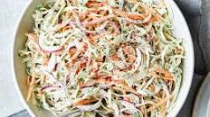

Sweet Restaurant Slaw

This sweet coleslaw recipe tastes like the slaw served at popular fried chicken or fish restaurants. It's excellent with burgers or on top of BBQ pork sandwiches, too!
Ingredients
- 1 (16 ounce) bag coleslaw mix
- 2 tablespoons diced onion
- ⅔ cup creamy salad dressing (such as Miracle Whip™)
- ½ cup white sugar
- 3 tablespoons vegetable oil
- 1 tablespoon white vinegar
- ½ teaspoon poppy seeds
- ¼ teaspoon salt
Steps
- Combine coleslaw mix and onion in a large bowl.
- Whisk salad dressing, sugar, vegetable oil, vinegar, poppy seeds, and salt together in a medium bowl until blended. Pour dressing over coleslaw mixture and toss to coat.
- Chill for at least 2 hours before serving.